所谓五藏者，藏精气而不泻也，故满而不能实。
——黄帝内经·素问·五藏别论

初春｜节气｜ 雨水 ｜时间｜ 二月十八日至三月五日
今年雨水需特别注意的健康问题：关节问题、失眠早醒、乳腺问题
主料：绿豆芽、嫩韭菜。
配料：生姜、紫苏子、香油、盐、糖、米醋。
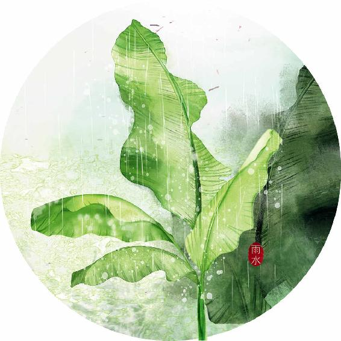
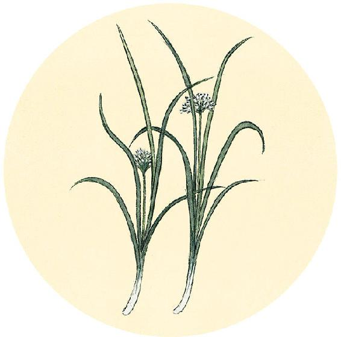
节日食方
人日七菜羹/七菜粥（整个春天都适合吃）
原料：荠菜、葱叶、桑叶、大蒜、蒜苗、香菜、萝卜缨（或萝卜）、芹菜、芥菜、韭菜、蔓菁、油菜薹、繁缕等辛味蔬菜任选7种。今年可以多吃荠菜、葱叶、桑叶。
做法一：
锅内水烧开，放少许油和盐，加入切碎的7种蔬菜，大火煮熟，用淀粉（或藕粉、葛根粉）勾少许薄芡，起锅。
做法二：
先煮粥，加一点油和盐，粥快熟时，加入切碎的7种蔬菜，再煮一会儿，起锅。
功效：升发阳气、疏散风热、清肠排毒。
【释义】腹部饱闷胀起，胸膈两胁间有顶住的感觉，下身厥冷，上体眩晕，问题出在足太阴、阳明。
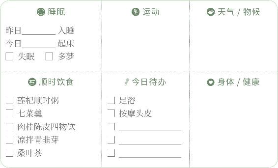
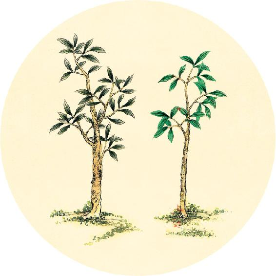
节气食方
凉拌青韭芽（上）
主料：1份绿豆芽（发豆芽的方法见2月8日）、1份嫩韭菜。
调料：生姜、紫苏子、香油、盐、糖、米醋。
做法：
1. 将紫苏子放炒锅里用小火稍炒一下，炒出香味就起锅，擀碎。
2. 将生姜连皮一起切碎末。
3. 用少许盐、糖、米醋、香油拌成调味汁。
4. 将韭菜洗干净，不要切。
（2月20日继续）
咳嗽上气，厥在胸中，过在手阳明、太阴。
——黄帝内经·素问·五脏生成论
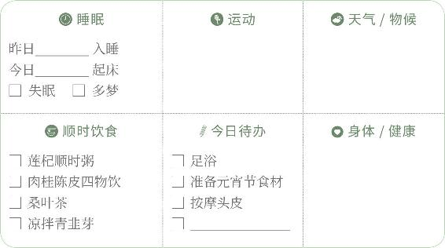
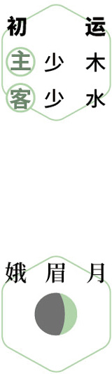
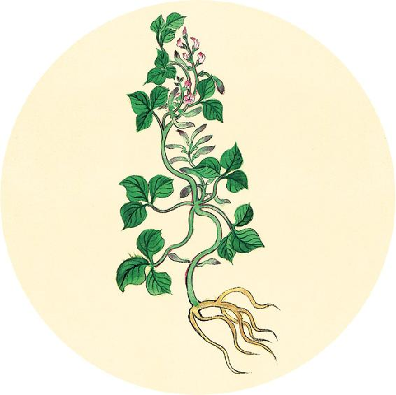
节气食方
凉拌青韭芽（下）
5. 往锅里多加些水烧开，把调好的调味汁倒1/3进去（留2/3备用）。保持大火，放入韭菜快速地焯烫一下，马上捞出来，用凉水冲淋一遍。
6. 将焯好的韭菜切成1寸（3厘米）长的段。
7. 把豆芽放锅里焯熟，大约1分钟，捞出过下凉水。
8. 把韭菜和豆芽放在碗里，倒入姜末和调味汁，拌匀。
9. 准备一个小碗和一个盘子，将拌好的韭菜和豆芽放进小碗里，压实，然后倒扣在盘中，洒上紫苏子碎。
【释义】咳嗽逆喘，病在胸中，问题出在手阳明和太阴。
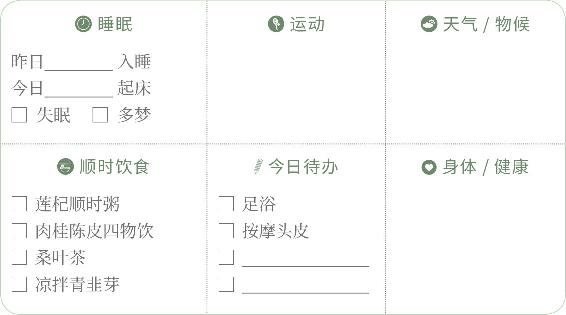
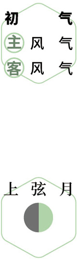
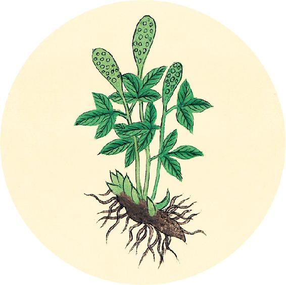
二十四节气茶养生
今年雨水节气品茶推荐：桑叶茶。
解春困：散热排浊茶。
原料：川陈皮1个，竹茹3克，霜桑叶6克。
做法：沸水冲泡。
功效：消食解腻，化痰止咳，调理春困。
这道茶里用的是霜桑叶。春天的嫩桑叶是美味食材，秋冬经霜的桑叶则药性更足。
心烦头痛，病在膈中，过在手巨阳、少阴。
——黄帝内经·素问·五脏生成论
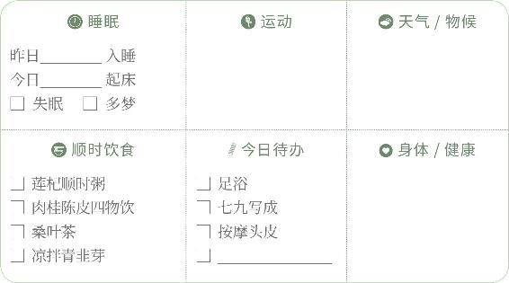
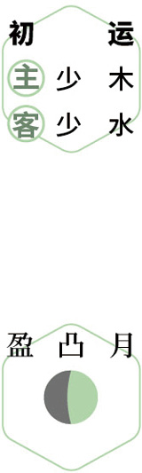
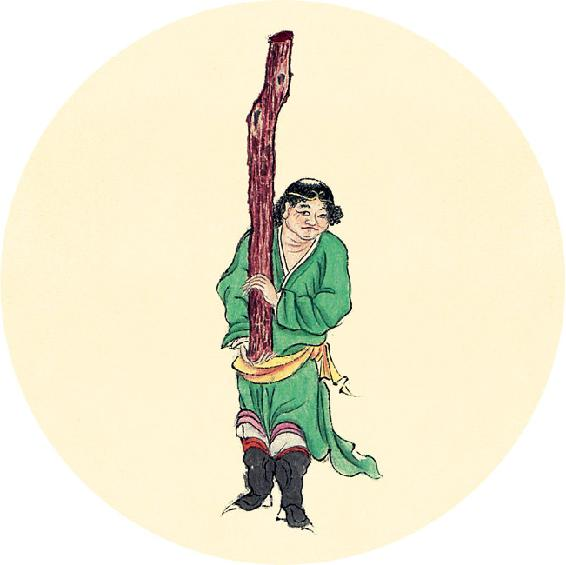
健康提示
雨水节气的养生功课：补阳气。
进入春季，排毒是重点。浊气不排出，清阳之气就难以升发，会加重春困现象，在午后感觉困乏，或是头部发胀，可以喝解春困茶（在2月21日）。
今年雨水特殊的养生要点——
今年雨水节气，可能有大风。注意防风湿，保护好关节和头部。
保养重点：心、肝。
容易出现的问题：关节问题、失眠早醒、乳腺问题。
【释义】心烦头痛，病在胸膈，问题出在手太阳和少阴。
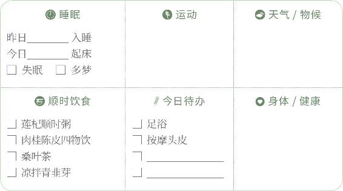
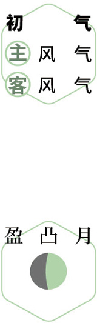
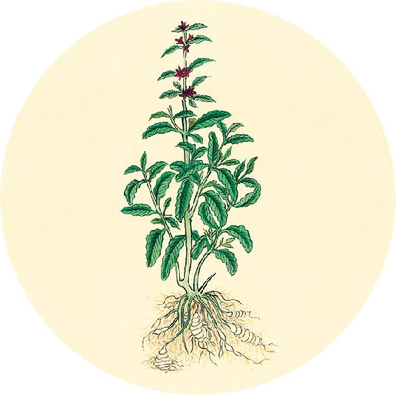
一候反思
平时身体是否有如下问题？
食后腹胀 □ 是 □ 否
有时积食 □ 是 □ 否
胃寒 □ 是 □ 否
吃糯米制品会有消化不良 □ 是 □ 否
如有一个答“是”，吃汤圆时放姜和陈皮同煮。
今年推荐的汤圆配方及做法见2月24日。
凡相五色，面黄目青，面黄目赤，面黄目白，面黄目黑者，皆不死也。面青目赤，面赤目白，面青目黑，面黑目白，面赤目青，皆死也。
——黄帝内经·素问·五脏生成论
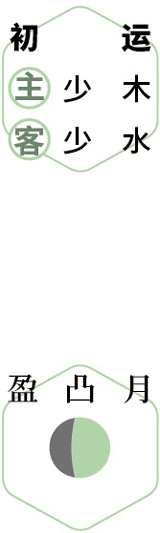
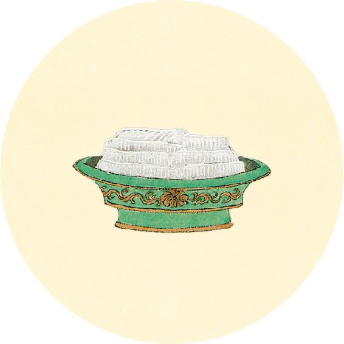
节日食方
自制椰香花生汤圆（素馅）
花生汤圆一般是用猪油制作，今年不宜多吃猪油，可以改用椰子油来做。
皮料：糯米粉1千克，大米粉500克。
馅料：花生500克，橘皮糖或红糖500克，椰子油100克，开水50毫升。
按这样的比例大约可以做出100个中等个头的汤圆。
汤圆馅做法见2月25日。
【释义】大凡观察人面部的五色，面黄目青，面黄目赤，面黄目白，面黄目黑的，都不是死的征象（这是因为黄色代表脾胃之气）；面青目赤，面赤目白，面青目黑，面黑目白，面赤目青的，都是死的征象。
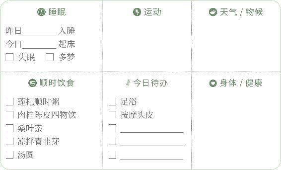
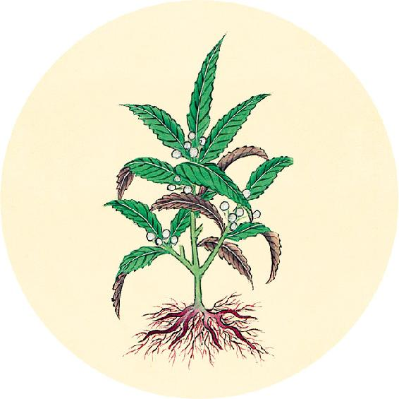
节日食方
椰香花生汤圆馅的做法：
1. 花生切碎，放炒锅里炒1分钟。
2. 把橘皮糖或红糖切碎，与花生碎拌匀。
3. 放入饭盒，将椰子油加热成液体状，倒进去搅拌均匀。
4. 放冰箱冷藏半小时到凝固。
5. 用刀切成小方块。
汤圆馅就做好了，如果一次用不完，可以放冰箱保存。
包汤圆的方法见2月26日。
脑、髓、骨、脉、胆、女子胞，此六者，地气之所生也，皆藏于阴而象于地，故藏而不泻，名曰奇恒之府。
——黄帝内经·素问·五藏别论
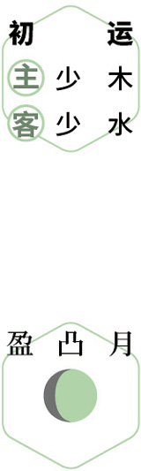
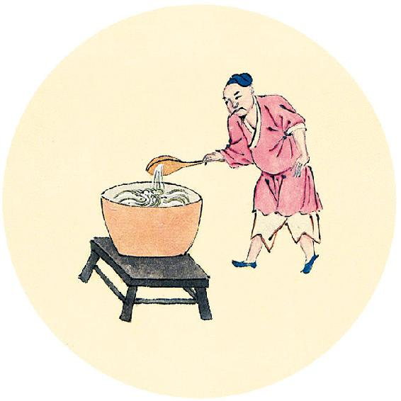
节日食方
包汤圆
做法：
1. 把糯米饭与大米粉混合。
2. 加温水揉成面团，不要太干，要有表面湿润沾手的感觉。
3. 揉成长条，用刀切成小剂子。
4. 取一个剂子搓圆，在手心里捏扁，放一粒馅在正中，包好，搓成圆球形。
翻到2月23日，根据自测结果，选择煮汤圆的方法。
普通方法：用清水煮熟即可食用。
姜糖汤圆的煮法：
1. 将一大块生姜带皮拍扁，连同一个陈皮和适量红糖入锅，加水煮开后，再煮十几分钟。
2. 下汤圆，水开后小火煮10分钟左右，待汤圆都浮起来，就可以关火起锅了。
3. 食用时，先喝汤，再吃汤圆，更有助于消化。
【释义】脑、髓、骨、脉、胆和子宫，这六者，是禀承地气所生的，都能藏精血，就像大地包藏万物一样，所以它们的作用是藏精气而不泻于体外，称为“奇恒之腑”。（它们在功能上像五脏，藏而不泻，而在形态上像六腑，内有空腔，但又不同于传化饮食的脏腑，所以称为特殊的“腑”。——允斌注）
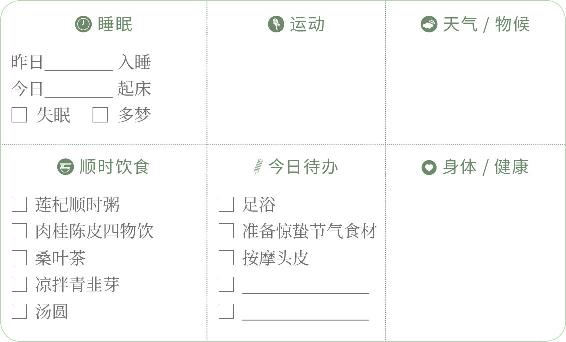
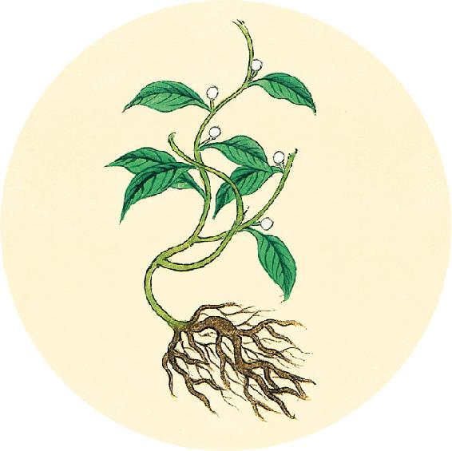
二候反思
明天是世界听力日。自测一下是否有听力损失：
耳鸣 □ 是 □ 否
经常要求别人把话再说一遍 □ 是 □ 否
家人说您把电视音量开得太大 □ 是 □ 否
别人说您讲话声音大 □ 是 □ 否
有1个答“是”，说明您的听力已经受损。注意避开损伤听力的两大杀手：耳机、药物。
如果有耳鸣，可以喝百莲聪耳汤（做法见11月28日）。
胃、大肠、小肠、三焦、膀胱，此五者，天气之所生也，其气象天，故泻而不藏，此受五藏浊气，名曰传化之府，此不能久留，输泻者也。
——黄帝内经·素问·五藏别论
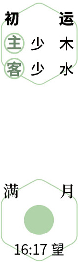
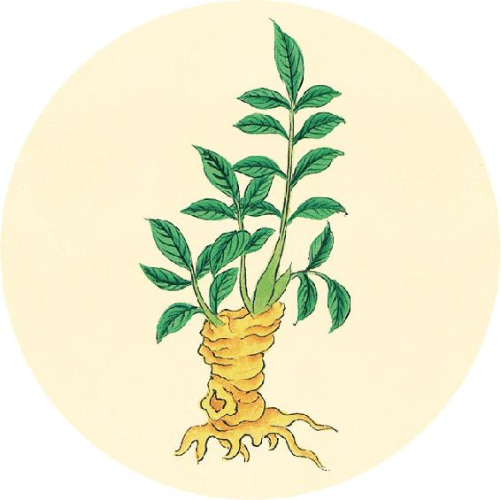
健康提示
明天是医圣张仲景诞辰1871周年纪念日。
张仲景是东汉著名医学家，后世尊为“医圣”。
东汉末年，疫病流行，张仲景的家族有2/3死于瘟疫。他“感往昔之沦丧，伤横夭之莫救，乃勤求古训，博采众方”，以毕生行医经验，撰写传世巨著《伤寒杂病论》，被历代医家尊为“医门之圣书”，成为中医四大经典之一，是学习中医的必读书籍。
【释义】胃、大肠、小肠、三焦、膀胱，这五者，是禀承天气所生的，它们像天一样的健运不息，所以其作用是泻而不藏。它们受纳五藏（五脏）的浊气，称为“传化之腑”。它们所受纳的饮食，不能久留，要进行分化，把精华输送全身，糟粕排泄出去。
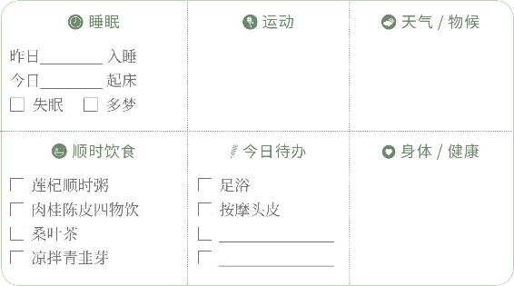
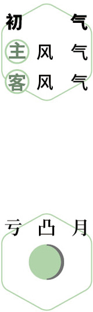
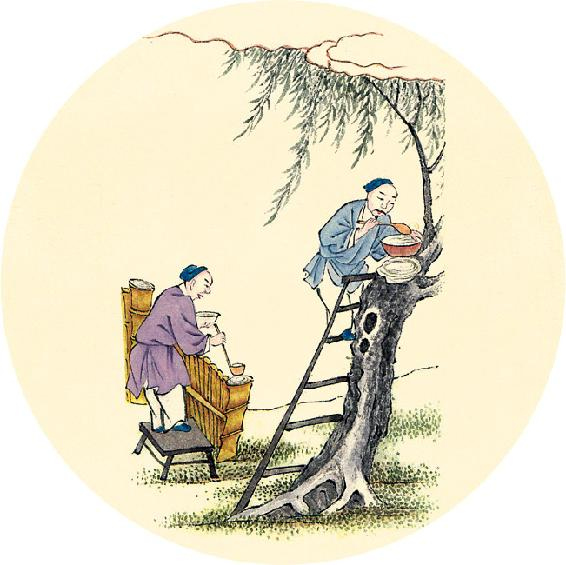
健康提示
今天是医圣张仲景诞辰。
张仲景为中医学做出伟大贡献，被后人誉为“万世医宗”。
2020年，国家卫生健康委、国家中医药管理局发布的新冠肺炎推荐治疗方“清肺排毒汤”，便是来自张仲景的经方组合。
魄门亦为五藏使，水谷不得久藏。
——黄帝内经·素问·五藏别论
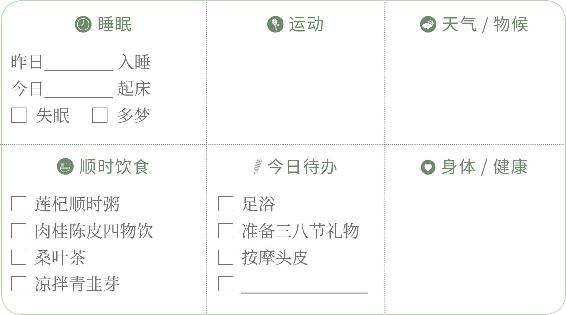
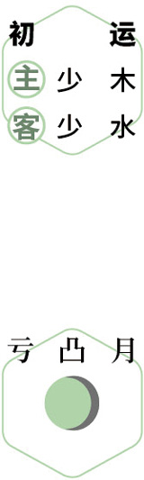
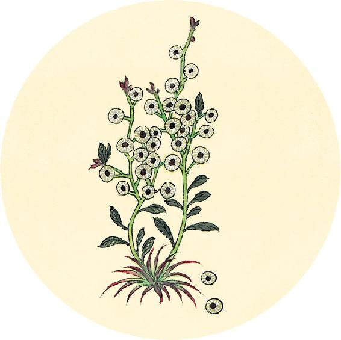
食材准备
三天后进入惊蛰节气。
1.黄豆萝卜汤（辛丑岁配方）
原料：黄豆、白萝卜、大葱或小葱、蒲公英根。
2.节气养生茶
原料：霜桑叶、牛蒡茶。
3. 辛丑岁初气保健方：肉桂陈皮四物饮（从大寒吃到春分前日，做法见3月12日）
原料：肉桂、陈皮、柠檬、麦芽糖。
4. 辛丑岁全年保健粥：莲杞顺时粥（做法见2月11日）
原料：枸杞子、莲子、炒荷叶、川陈皮、茯苓、粥料。
【释义】“魄门”（肛门）也是五藏（五脏）的行使（指肛门的开启和闭合功能受五脏之气的调节，同时，它的开闭功能是否正常，又反过来影响五脏气机的升降。——允斌注），水谷糟粕不能久留。
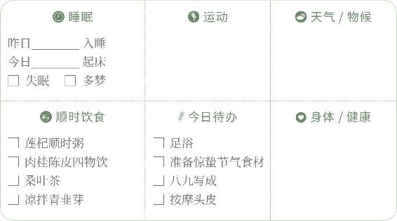
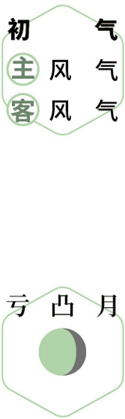
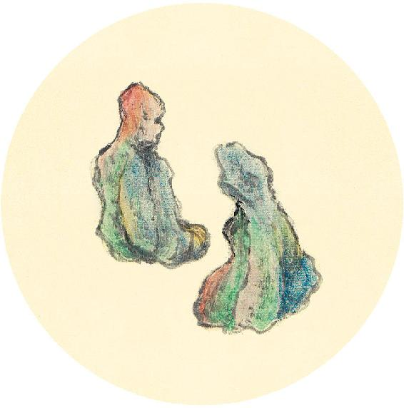
健康提示
今天是世界听力日。听力受损，有的是不可逆转的。保护听力，首先要防止药物伤耳。
哪些常用药，会损伤听力？
1. 多种抗生素
2. 口服避孕药
3. 阿司匹林、溴隐亭、利多卡因、巴比妥类、抗组胺药、皮质类固醇激素、抗甲状腺药、部分治疗急性高血压和急性肾炎的利尿剂、部分化疗和放疗药
4. 重金属：铅、汞等
5. 消毒剂、防腐剂
食方：百莲聪耳汤（见11月28日）
所谓五藏者，藏精气而不泻也，故满而不能实。
——黄帝内经·素问·五藏别论
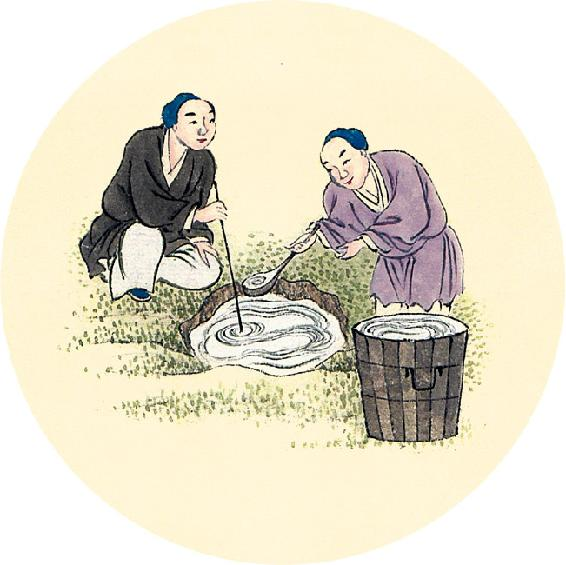
节气总结备
吃荠菜、葱叶、桑叶超过三次 □ 是 □ 否
吃绿豆芽超过三次 □ 是 □ 否
喝七菜羹/七宝粥的次数________
喝莲杞顺时粥的次数________
喝肉桂陈皮四物饮的次数________
喝桑叶茶的次数________
身体有哪些改善________________________________________
【释义】所谓五藏（五脏），是藏精而不泻，所以能自身保持盈满，而不能用外物来充实。（脏腑，古人用“藏”“府”来命名五脏和六腑，由此我们可以看出它们功能的不同。——允斌注）
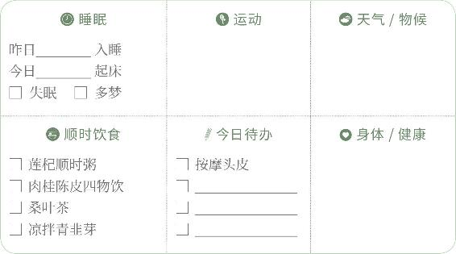
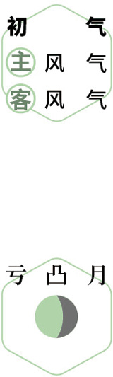